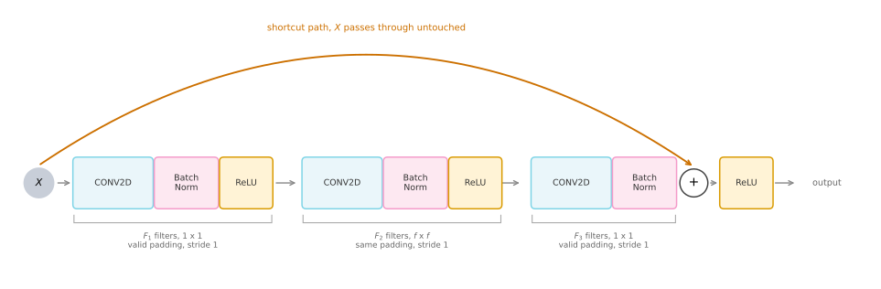
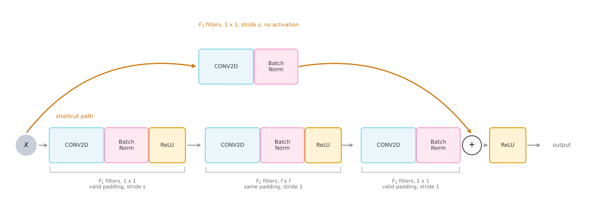
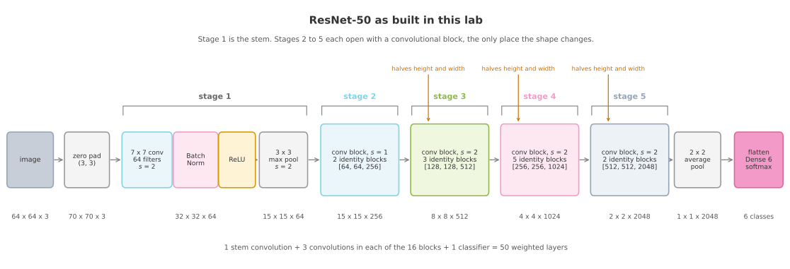

Build the identity block and the convolutional block in Keras, assemble them into a 50 layer ResNet, and train it to recognize sign language digits.
Published
Aug 15, 2026
ImportantSix changes from the original notebook
The assignment was written against TensorFlow 2.3 with Keras 2, and this page runs on TensorFlow 2.21 with Keras 3. Six things changed (updated 2026-08-31).
Seeding and determinism were added.tf.keras.utils.set_random_seed(1) and tf.config.experimental.enable_op_determinism() replace the notebook’s TensorFlow-only seed, so the run reproduces identically on every render.
The source BatchNorm helper was replaced with Keras BatchNormalization, which uses a different default epsilon, so activations differ in the last few decimal places.
The data helpers are written out inline rather than imported from resnets_utils.py.
The training outputs changed as a consequence of the two points above.
The pretrained-checkpoint evaluation was replaced by a freshly trained model. The assignment loaded resnet50.h5, a Keras 2 file Keras 3 cannot deserialize.
Five photographs were added at the end, two upright and three rotated, to show how the trained model behaves on inputs outside the training distribution.
The two block designs, the ResNet-50 layout, the SIGNS dataset and the hyperparameters are the assignment’s own.
Modern Networks made the argument for skip connections. A residual block can learn the identity almost for free, so adding depth stops making optimization harder, and networks over a hundred layers deep become trainable. That page stopped at the argument. This lab turns it into working code.
The ConvNets built in this course so far have had two or three weighted layers. This one has fifty, and it is assembled from exactly two reusable pieces.
The identity block, used wherever the input and output of a block have the same shape.
The convolutional block, used wherever the shape changes and the shortcut needs adjusting.
Stacking those two pieces gives ResNet-50, which then gets trained on the SIGNS dataset of hand gestures. By the end you will have implemented a skip connection, seen why two block types are needed rather than one, and watched a fifty layer network reach a useful accuracy in a couple of minutes on a laptop CPU.
Packages
The imports are longer than usual because the Functional API needs each layer type by name. Add is the one that is new. It is the layer that performs the addition at the end of every block.
Seeding covers the Python, NumPy, and TensorFlow generators in one call, which fixes the weight initialization and the shuffling so that the numbers on this page are stable across renders.
import osos.environ["TF_CPP_MIN_LOG_LEVEL"] ="3"# quiet TensorFlow's startup loggingimport h5pyimport numpy as npimport pandas as pdimport matplotlib.pyplot as pltimport tensorflow as tffrom tensorflow.keras.layers import (Input, Add, Dense, Activation, ZeroPadding2D, BatchNormalization, Flatten, Conv2D, AveragePooling2D, MaxPooling2D)from tensorflow.keras.models import Modelfrom tensorflow.keras.initializers import random_uniform, glorot_uniformtf.keras.utils.set_random_seed(1) # Python, NumPy and TensorFlow generatorstf.config.experimental.enable_op_determinism() # same arithmetic on every runprint("TensorFlow", tf.__version__)
TensorFlow 2.21.0
NoteLab Files Download
This lab uses the SIGNS dataset, the same two HDF5 files as the previous lab, plus five photographs for the final section. There are no helper modules to install.
A residual block adds the input to the output. In Keras that is written Add()([X_shortcut, X]), the explicit layer form that takes a list of tensors. (A plain symbolic X_shortcut + X also works in Keras 3, because + on a KerasTensor dispatches to a traced keras.ops add; the Add() layer is used here because it states the intent and reads clearly in the model summary.) Either way, adding two tensors requires them to agree on every dimension. That single constraint is the reason there are two block types instead of one.
When a block leaves the shape alone, the shortcut can carry the input across untouched. When a block changes the shape, which happens whenever the network downsamples or widens, the shortcut has to be reshaped on the way. Modern Networks called that adjustment \(W_s\) and noted it is usually a learned \(1 \times 1\) projection. Here you build it.
Identity Block
The identity block is the case where the shapes already agree. The version implemented here skips over three layers rather than two, which is what ResNet-50 uses.

Identity Block.
carries meaning in this diagram and in the two that follow. A convolution is cyan, a BatchNorm is pink, a ReLU is amber, and the orange path is always the shortcut.
Three things in that diagram deserve a sentence each.
The three convolutions are not three copies of the same thing. The first is \(1 \times 1\), the middle one is \(f \times f\), and the third is \(1 \times 1\) again. That is the bottleneck pattern from the inception module, reused here. The cheap \(1 \times 1\) convolution squeezes the channel count down, the expensive \(f \times f\) convolution runs on the narrow volume, and a second \(1 \times 1\) expands it back. ResNet-34 uses two \(3 \times 3\) convolutions per block instead, and it is the bottleneck that makes fifty layers affordable.
The third component has no ReLU. The activation is applied after the addition, not before it, because the whole point of the shortcut is that it reaches the addition before the non-linearity. Putting a ReLU in front of the addition would clip the residual branch to non-negative values and destroy the property that makes the block able to learn the identity.
The middle convolution uses same padding while the two \(1 \times 1\) convolutions use valid padding. This is not an inconsistency. A \(1 \times 1\) filter with stride 1 leaves the height and width alone whatever the padding setting says, so valid is simply the honest label. The \(f \times f\) filter would shrink the volume, so it needs same padding to preserve the shape the addition depends on.
Now the code. filters arrives as a list of three integers, one per convolution, and f is the size of the middle filter. The initializer argument exists so that the weights start from a fixed, reproducible draw.
def identity_block(X, f, filters, initializer=random_uniform):""" Implementation of the identity block. Arguments: X -- input tensor of shape (m, n_H_prev, n_W_prev, n_C_prev) f -- integer, the height and width of the middle CONV window on the main path filters -- list of three integers, the number of filters in each CONV layer initializer -- sets up the initial weights of a layer Returns: X -- output of the identity block, tensor of shape (m, n_H, n_W, n_C) """ F1, F2, F3 = filters# Save the input value. It is added back to the main path at the end. X_shortcut = X# First component of main path X = Conv2D(filters=F1, kernel_size=1, strides=(1, 1), padding='valid', kernel_initializer=initializer(seed=0))(X) X = BatchNormalization(axis=3, momentum=0.9)(X) X = Activation('relu')(X)# Second component of main path, the only one that looks at neighboring pixels X = Conv2D(filters=F2, kernel_size=f, strides=(1, 1), padding='same', kernel_initializer=initializer(seed=0))(X) X = BatchNormalization(axis=3, momentum=0.9)(X) X = Activation('relu')(X)# Third component of main path, deliberately with no activation X = Conv2D(filters=F3, kernel_size=1, strides=(1, 1), padding='valid', kernel_initializer=initializer(seed=0))(X) X = BatchNormalization(axis=3, momentum=0.9)(X)# Final step: add the shortcut to the main path, then apply the ReLU X = Add()([X_shortcut, X]) X = Activation('relu')(X)return X
Two details in that function are worth pausing on.
BatchNormalization(axis=3) normalizes over the channel axis, since axis 3 of an \((m, n_H, n_W, n_C)\) volume is \(n_C\). Each feature map gets its own scale and shift. The momentum=0.9 sets how fast the running mean and variance used at prediction time track the batches seen during training. Keras defaults to 0.99, which averages over roughly the last hundred batches. An epoch here is only 34 batches, so the default would leave the prediction time statistics lagging several epochs behind the weights, and test accuracy would look far worse than the model really is.
Add()([X_shortcut, X]) is a layer, not the + operator. Writing X_shortcut + X would work on eager tensors but would not register as a node in the graph that Model traces, so the shortcut would go missing from the model. The doubled brackets are there because Add takes a list of tensors to sum, which is what lets it merge more than two paths when a design calls for it.
Running the block on a small made-up input shows what it does to a shape. The input here is 4 by 4 with 3 channels, and filters=[4, 4, 3] ends the main path back at 3 channels, so the addition is legal.
The shape is unchanged, which is the whole definition of this block. Note that the middle number of filters can be anything, because it is internal to the block. Only the last one has to match the input channel count.
Now watch what happens when it does not. Setting the last filter count to 6 gives a main path that produces 6 channels while the shortcut still carries 3.
ValueError: Inputs have incompatible shapes. Received shapes (4, 4, 3) and (4, 4, 6)
That failure is the reason the second block type exists. A network that never changed its shape would need only the identity block, but a useful ConvNet halves its height and width and multiplies its channel count as it goes deeper. Every one of those transitions breaks the addition.
Convolutional Block
The convolutional block fixes the mismatch by putting a convolution on the shortcut as well, so that both paths arrive at the addition with the same shape.

Convolutional Block.
The shortcut convolution is a \(1 \times 1\) filter with stride \(s\) and \(F_3\) output channels. Those three choices are exactly what is needed to match the main path, and nothing more. The stride \(s\) matches the stride of the first convolution on the main path, so both paths downsample by the same factor. The \(F_3\) filters match the channel count of the last convolution on the main path. The \(1 \times 1\) size means the projection looks at one pixel position at a time, mixing channels but never neighbors. Note that this shortcut is still a learned linear projection, so it does adapt its channel mixing during training. Matching the shape is its architectural job, not the limit of what it does.
The shortcut convolution has no activation function. It is there to reshape, not to learn features, so a plain linear projection followed by BatchNorm is all it does. This is the learned version of \(W_s\) from the lecture, made concrete.
def convolutional_block(X, f, filters, s=2, initializer=glorot_uniform):""" Implementation of the convolutional block. Arguments: X -- input tensor of shape (m, n_H_prev, n_W_prev, n_C_prev) f -- integer, the height and width of the middle CONV window on the main path filters -- list of three integers, the number of filters in each CONV layer s -- integer, the stride used by the first main path CONV and by the shortcut initializer -- sets up the initial weights of a layer, Glorot uniform here Returns: X -- output of the convolutional block, tensor of shape (m, n_H, n_W, n_C) """ F1, F2, F3 = filters X_shortcut = X##### MAIN PATH ###### First component, and the only place on this path where the stride is not 1 X = Conv2D(filters=F1, kernel_size=1, strides=(s, s), padding='valid', kernel_initializer=initializer(seed=0))(X) X = BatchNormalization(axis=3, momentum=0.9)(X) X = Activation('relu')(X)# Second component X = Conv2D(filters=F2, kernel_size=f, strides=(1, 1), padding='same', kernel_initializer=initializer(seed=0))(X) X = BatchNormalization(axis=3, momentum=0.9)(X) X = Activation('relu')(X)# Third component, no activation X = Conv2D(filters=F3, kernel_size=1, strides=(1, 1), padding='valid', kernel_initializer=initializer(seed=0))(X) X = BatchNormalization(axis=3, momentum=0.9)(X)##### SHORTCUT PATH ###### A linear projection that matches the main path's stride and channel count X_shortcut = Conv2D(filters=F3, kernel_size=1, strides=(s, s), padding='valid', kernel_initializer=initializer(seed=0))(X_shortcut) X_shortcut = BatchNormalization(axis=3, momentum=0.9)(X_shortcut)# Final step: add the two paths, then apply the ReLU X = Add()([X, X_shortcut]) X = Activation('relu')(X)return X
The default initializer changed from random_uniform to glorot_uniform. Glorot, also called Xavier, scales the initial weights by the number of inputs and outputs of the layer, which keeps activation variance roughly steady as signals move forward.
The same input that failed a moment ago now works, and this time the shape genuinely changes.
A 4 by 4 volume with 3 channels came in and a 2 by 2 volume with 6 channels came out. The stride of 2 halved the height and width, and the 6 filters in the last convolution set the new channel count. Both paths made that same journey, which is why the addition succeeded.
Review Questions
1. Why does the last component of both blocks apply BatchNorm but no ReLU?
TipAnswer
Because the ReLU belongs after the addition, not before it. The block computes \(g(F(X) + X)\), where \(F\) is the main path. Applying a ReLU at the end of \(F\) would make the residual branch non-negative, so it could only ever add to the shortcut and never subtract from it. It would also break the identity property, since a block whose main path is zeroed out should pass \(X\) through unchanged, and that only works if the addition happens first.
1. The identity block takes filters=[F1, F2, F3]. Which of those three is constrained by the input, and why are the other two free?
TipAnswer
Only \(F_3\) is constrained. It sets the channel count of the last convolution, which is the tensor that meets the shortcut at the addition, so it has to equal the number of channels in the input. \(F_1\) and \(F_2\) describe volumes that exist only inside the block, so they can be anything. In practice they are chosen much smaller than \(F_3\), which is what makes the block a bottleneck.
1. In the convolutional block, why does the shortcut convolution use the same stride s as the first convolution on the main path rather than a stride of 1?
TipAnswer
Because the addition needs matching height and width, not just matching channels. The main path downsamples by a factor of \(s\) at its first convolution, so a stride 1 shortcut would arrive at full resolution and the shapes would disagree. Matching the stride makes both paths shrink by the same factor.
1. Why is Add()([X_shortcut, X]) used instead of writing X_shortcut + X?
TipAnswer
Add() is a Keras layer, so it becomes a node in the graph that tf.keras.Model traces from input tensor to output tensor. The + operator produces a tensor without registering a layer, so the model would not record the shortcut as part of its structure. The extra brackets are because Add accepts a list of tensors to sum, which lets it merge more than two paths when needed.
Building ResNet-50
With both block types written, ResNet-50 is mostly bookkeeping. The network is described in five numbered stages, and it is worth being clear about what stage 1 is, because it contains no residual blocks at all. Stage 1 is the stem, a single wide convolution with BatchNorm, ReLU, and max pooling, whose job is to get the image down to a manageable size before the expensive part begins. Stages 2 through 5 are the residual part. Each one opens with a convolutional block, which is the only place the shape changes, followed by identity blocks that leave it alone. A pooling and classification head finishes the network.

Building ResNet-50.
Where the name comes from is worth pinning down, because the count is a convention rather than a tally of everything with weights. The fifty counts the main path only, one stem convolution plus three convolutions in each of the sixteen blocks plus the final dense classifier. It deliberately leaves out the four learned \(1 \times 1\) shortcut projections in the convolutional blocks (which brings the real convolution count to 53) and every BatchNormalization layer, all of which carry weights of their own. So ResNet-50 is fifty layers deep along its main path, not a network with exactly fifty parameterized layers.
The channel counts follow one rule down the whole network. Each stage doubles the width of the previous stage, from 256 to 512 to 1024 to 2048, at the same time as it halves the height and width. Halving both spatial dimensions divides the number of positions by four while doubling the channels multiplies by two, so the volume shrinks steadily rather than exploding. This is the same trade seen in LeNet-5 and AlexNet, applied for fifty layers instead of eight.
The name is also worth decoding, since it is the one thing about ResNet-50 that looks arbitrary. Counting weighted layers gives one \(7 \times 7\) stem convolution, three convolutions in each of the \(1 + 2 + 1 + 3 + 1 + 5 + 1 + 2 = 16\) blocks, and one final dense layer, which is \(1 + 48 + 1 = 50\). Pooling, BatchNorm, and activation layers hold no weights and do not count, and neither do the shortcut projections.
def ResNet50(input_shape=(64, 64, 3), classes=6):""" Stage-wise implementation of ResNet-50: CONV2D -> BATCHNORM -> RELU -> MAXPOOL -> CONVBLOCK -> IDBLOCK*2 -> CONVBLOCK -> IDBLOCK*3 -> CONVBLOCK -> IDBLOCK*5 -> CONVBLOCK -> IDBLOCK*2 -> AVGPOOL -> FLATTEN -> DENSE Arguments: input_shape -- shape of one image in the dataset classes -- integer, the number of classes Returns: model -- a Model() instance in Keras """ X_input = Input(input_shape)# Zero-Padding, so the 7x7 stem convolution has room to work X = ZeroPadding2D((3, 3))(X_input)# Stage 1: the stem X = Conv2D(64, (7, 7), strides=(2, 2), kernel_initializer=glorot_uniform(seed=0))(X) X = BatchNormalization(axis=3, momentum=0.9)(X) X = Activation('relu')(X) X = MaxPooling2D((3, 3), strides=(2, 2))(X)# Stage 2: s=1, so this stage keeps the pooled resolution X = convolutional_block(X, f=3, filters=[64, 64, 256], s=1) X = identity_block(X, 3, [64, 64, 256]) X = identity_block(X, 3, [64, 64, 256])# Stage 3 X = convolutional_block(X, f=3, filters=[128, 128, 512], s=2)for _ inrange(3): X = identity_block(X, 3, [128, 128, 512])# Stage 4 X = convolutional_block(X, f=3, filters=[256, 256, 1024], s=2)for _ inrange(5): X = identity_block(X, 3, [256, 256, 1024])# Stage 5 X = convolutional_block(X, f=3, filters=[512, 512, 2048], s=2)for _ inrange(2): X = identity_block(X, 3, [512, 512, 2048])# AVGPOOL, which collapses the 2x2 map to a single position X = AveragePooling2D(pool_size=(2, 2))(X)# Output layer X = Flatten()(X) X = Dense(classes, activation='softmax', kernel_initializer=glorot_uniform(seed=0))(X) model = Model(inputs=X_input, outputs=X)return model
Stage 2 uses s=1 while the other three use s=2. That is deliberate. The stem has already reduced 64 by 64 down to 15 by 15 through a strided convolution and a pooling layer, so stage 2 widens the channels without shrinking the map any further. It still needs a convolutional block, because widening from 64 channels to 256 is itself a shape change the shortcut must follow.
model = ResNet50(input_shape=(64, 64, 3), classes=6)trainable =sum(np.prod(w.shape) for w in model.trainable_weights)print(f"layer objects: {len(model.layers)}")print(f"total parameters: {model.count_params():,}")print(f"trainable parameters: {int(trainable):,}")
layer objects: 177
total parameters: 23,600,006
trainable parameters: 23,546,886
A full model.summary() for this network runs to several hundred lines, so instead here is the shape at each stage boundary, pulled out of the model that was just built. These are the numbers written on the diagram above, now read back from the real thing rather than taken on trust.
# Pick out the layers that sit on a stage boundary, then read the shape each one emits.boundaries = [("input", model.layers[0]), ("zero pad", model.layers[1]), ("stem conv", model.layers[2]), ("max pool", model.layers[5])]# Every 'add' layer marks the end of one block; the stage ends at the last of them.adds = [layer for layer in model.layers if layer.name.startswith("add")]for stage_number, block_index inzip([2, 3, 4, 5], [2, 6, 12, 15]): boundaries.append((f"stage {stage_number}", adds[block_index]))boundaries += [("average pool", model.layers[-3]), ("flatten", model.layers[-2]), ("output", model.layers[-1])]for name, layer in boundaries:print(f"{name:<14}{str(layer.output.shape[1:]):>16}")
input (64, 64, 3)
zero pad (70, 70, 3)
stem conv (32, 32, 64)
max pool (15, 15, 64)
stage 2 (15, 15, 256)
stage 3 (8, 8, 512)
stage 4 (4, 4, 1024)
stage 5 (2, 2, 2048)
average pool (1, 1, 2048)
flatten (2048,)
output (6,)
Every number matches the diagram. The 2048 channel volume at the end of stage 5 sits on a 2 by 2 grid, average pooling collapses that to a single position, and Flatten turns the resulting 1 by 1 by 2048 volume into a vector of 2048 numbers that the dense layer maps to 6 class scores.
Notice how few parameters the classifier holds. With 2048 inputs and 6 outputs it has \(2048 \times 6 + 6 = 12{,}294\) weights, a rounding error against the 23.6 million in the network as a whole. Average pooling before the dense layer is what keeps it that small. Flattening the 2 by 2 by 2048 volume directly would have given an 8,192 number vector and four times the classifier weights.
Review Questions
1. Stage 2 uses a convolutional block even though it does not change the height or width. Why can it not use an identity block?
TipAnswer
Because it changes the channel count. The stem hands stage 2 a 15 by 15 by 64 volume and the stage produces 15 by 15 by 256. The identity block requires the shortcut to arrive with the same number of channels as the main path, and 64 does not equal 256. The convolutional block’s \(1 \times 1\) projection with 256 filters fixes that, using s=1 so the spatial size is left alone.
1. Where does the 50 in ResNet-50 come from, and why do the shortcut convolutions not count?
TipAnswer
One stem convolution, three convolutions in each of the 16 residual blocks, and one dense classifier, giving \(1 + 48 + 1 = 50\). The convention counts layers along the main path from input to output, which is the depth the gradient has to travel. Shortcut projections sit on a parallel branch rather than adding to that depth, and BatchNorm, pooling, and activation layers hold no weights at all.
1. The network has 23.6 million parameters but its classifier has only about twelve thousand. Which design choice is responsible, and what would the classifier cost without it?
TipAnswer
The average pooling layer before Flatten. It collapses the 2 by 2 by 2048 volume to 1 by 1 by 2048, so the dense layer sees 2048 inputs and needs \(2048 \times 6 + 6 = 12{,}294\) weights. Flattening the 2 by 2 volume directly would give 8192 inputs and \(8192 \times 6 + 6 = 49{,}158\) weights, four times as many.
Training on SIGNS
The dataset is SIGNS, photographs of hands making the digits 0 through 5, the same one the previous lab classified with a ConvNet of two convolutional layers. Loading and preparing it is unchanged, so the loader is reproduced here without further comment.
DATA ="../../../media/deep-learning/conv-application/"def load_signs():"""Load the SIGNS dataset as (X_train, Y_train, X_test, Y_test, classes)."""with h5py.File(DATA +"train_signs.h5", "r") as d: train_x = np.array(d["train_set_x"][:]) train_y = np.array(d["train_set_y"][:])with h5py.File(DATA +"test_signs.h5", "r") as d: test_x = np.array(d["test_set_x"][:]) test_y = np.array(d["test_set_y"][:]) classes = np.array(d["list_classes"][:])return train_x, train_y.reshape(1, -1), test_x, test_y.reshape(1, -1), classesdef convert_to_one_hot(Y, C):"""Turn a row of integer labels into one-hot columns, C classes deep."""return np.eye(C)[Y.reshape(-1)].TX_train_orig, Y_train_orig, X_test_orig, Y_test_orig, classes = load_signs()X_train = X_train_orig /255.X_test = X_test_orig /255.Y_train = convert_to_one_hot(Y_train_orig, 6).TY_test = convert_to_one_hot(Y_test_orig, 6).Tprint("number of training examples =", X_train.shape[0])print("number of test examples =", X_test.shape[0])print("X_train shape:", X_train.shape)print("Y_train shape:", Y_train.shape)
number of training examples = 1080
number of test examples = 120
X_train shape: (1080, 64, 64, 3)
Y_train shape: (1080, 6)
Compiling uses Adam with a learning rate of 0.00015, which is much smaller than the default 0.001. A fifty layer network with BatchNorm in every block is sensitive early on, and a large step in the first few batches can push it into a state it never recovers from.
Training runs for 10 epochs at a batch size of 32, which is 34 batches per epoch on 1,080 images. Passing validation_data makes Keras evaluate the test set after every epoch, which is what fills in the curves below.
This is the expensive cell on the page. Ten epochs of a 23.6 million parameter network takes about two and a half minutes on the four core laptop CPU this page was rendered on, and considerably less on a GPU.
history = model.fit(X_train, Y_train, epochs=10, batch_size=32, validation_data=(X_test, Y_test), verbose=0)h = history.historyprint(f"{'epoch':>6}{'loss':>9}{'accuracy':>10}{'val_loss':>10}{'val_accuracy':>13}")for e in [0, 1, 2, 4, 6, 9]:print(f"{e+1:>6}{h['loss'][e]:>9.4f}{h['accuracy'][e]:>10.4f} "f"{h['val_loss'][e]:>10.4f}{h['val_accuracy'][e]:>13.4f}")
Ten epochs is where this page stops, to keep the render honest and quick. The model is not finished improving at that point. Running the same cell with epochs=20, from the same seed, was measured at 0.0124 training loss and 92.5 percent test accuracy, against the numbers you see below. If you are running this yourself and do not mind the wait, change the one number and watch where it goes.
The test set accuracy above was measured on images collected the same way the training images were, under the same lighting, against the same background, cropped the same way. A more demanding question is what the model does with a photograph taken somewhere else entirely.
The five photographs below were all taken against a plain wall with a phone, not with whatever setup produced the dataset. They are deliberately split into two groups.
The first two are upright and roughly square, framed much like a dataset image. The last three are rotated a quarter turn and landscape, with the hand pushed off to one side of a wide frame. Nothing in the dataset looks like that.
Preparing any of them means the same two steps every input gets, namely resize to 64 by 64 and divide by 255.
The bottom row is what the network actually sees, and it is worth looking at closely. Forcing a wide photograph into a square squeezes the hand horizontally, and at 64 by 64 there is very little detail left to work with.
print(f"{'file':<20}{'true':>5}{'predicted':>10}{'confidence':>11} probabilities")for filename, true_label, group in photos: img = tf.keras.utils.load_img(PHOTOS + filename, target_size=(64, 64)) x = tf.keras.utils.img_to_array(img)[np.newaxis, ...] /255.0 p = model.predict(x, verbose=0)[0] mark ="correct"if np.argmax(p) == true_label else"WRONG"print(f"{filename:<20}{true_label:>5}{np.argmax(p):>10}{p.max():>10.1%} "f"{np.array2string(p, precision=2, suppress_small=True)}{mark}")
Four of the five photographs are wrong, and the one clear success is hand_2_upright, at 99.7 percent. Note that the split is not clean along the upright/rotated line. hand_5_upright is also wrong, called a 0 at 64 percent, so framing alone does not account for the failures. What the orientation does change is how badly the model fails. The upright mistake is its least confident answer on the whole set, while every rotated photograph is missed with near-total certainty.
Then look at the confidence column, because it carries the more uncomfortable lesson. The model does not hesitate on the images it gets wrong. It calls the rotated 1 a 0 at 99.2 percent, the rotated 3 a 0 at 99.9 percent, and the rotated 5 a 0 at 100.0 percent. Every rotated photograph collapses onto the same wrong class, and the more confidently the further it is from anything the model was trained on. A softmax output is a distribution over the six classes it was taught, normalized to sum to one, and nothing in that arithmetic can express “this input looks like nothing I was trained on”. Confidence is therefore not a detector for this kind of failure. A model can be wrong, and loudly certain, at the same time.
None of this is a flaw in the architecture. It is a statement about what the network was shown. The training and test images came from the same pool, so a high test accuracy only demonstrates that the model generalizes to more images of the same kind. Orientation was never a variable in those 1,080 images, so the filters had no reason to become invariant to it. Sliding one filter over every position makes the convolution equivariant to translation, meaning a shifted input produces a correspondingly shifted feature map. Pooling and the final global aggregation are what turn that equivariance into approximate tolerance of small shifts. Nothing in either construction relates a filter to a rotated copy of itself.
This is a distribution mismatch between the training data and the data the model meets in use, and it is one of the most common reasons a model that looks finished in a notebook disappoints in practice. The fixes all point the same way. Collect training data that looks like the data you actually expect, use data augmentation to manufacture some of that variety from the images you already have, or start from a network pre-trained on a much broader collection of images and fine tune it on your own. That last option is transfer learning, and with only 1,080 images it is usually the strongest of the three.
Review Questions
1. The model reaches a high test accuracy but can still be wrong on a phone photograph of a hand. Explain why that is not a contradiction.
TipAnswer
The test set measures generalization to new samples from the same distribution as the training set, since both were collected the same way. It says nothing about images from a different distribution. A phone photograph differs in background, lighting, distance, orientation, aspect ratio, and hand appearance, and none of that variation appeared in the 1,080 training images, so the model was never given a reason to become invariant to it. A test accuracy is a claim about one distribution, not a claim about the world.
1. Training accuracy climbs to nearly 100 percent while test accuracy settles lower and stops improving. What is that gap, and does the residual architecture cause it?
TipAnswer
It is overfitting. The network has 23.6 million parameters and only 1,080 training images, so it has more than enough capacity to memorize them. The residual architecture is not the cause. Skip connections address the optimization problem of training very deep networks, which is why the training loss falls so readily, but they do nothing about a shortage of data. The remedies are the usual ones, namely more data, augmentation, regularization, or transfer learning.
1. The rotated photographs fail far more confidently than the upright ones. A ConvNet is often described as being invariant to where an object sits in the frame, so why does turning the hand a quarter turn cause trouble?
TipAnswer
Because the invariance a convolution gives you is to translation, not to rotation. Sliding the same filter across every position is what makes a feature detectable wherever it appears, and pooling makes that tolerance a little wider still. Nothing in that construction relates a filter to a rotated copy of itself. A detector that has learned an upright fingertip is simply a different detector from one that has learned a sideways fingertip, and the second one was never trained, because every one of the 1,080 training images was upright.
1. Why does the forced resize to 64 by 64 hurt the landscape photographs more than the square ones?
TipAnswer
Resizing does not crop, it squashes. A 640 by 480 photograph forced into a square is compressed horizontally by a quarter, so the hand comes out distorted in a way no training image was. A square photograph loses detail when it shrinks but keeps its proportions. On top of that, the hand fills less of a wide frame to begin with, so after shrinking it occupies fewer of the 64 by 64 pixels than a dataset hand does.
Summary
Two functions, roughly thirty lines each, are the whole of ResNet-50.
The identity block applies three convolutions and adds its input back before the final ReLU. It is used wherever the shape is preserved, which is most of the network.
The convolutional block does the same but puts a \(1 \times 1\) convolution with stride \(s\) on the shortcut. It is used at the start of each stage, wherever the height, width, or channel count changes. That projection is the learned \(W_s\) from the lecture, and it is the concrete answer to a question the theory left open.
Stacking sixteen of those blocks between a convolutional stem and a pooled classifier gives the conventional count of fifty layers, twenty-three million parameters, and a network that trains without difficulty at a depth where a plain network would struggle. Skip connections are why. They are also the reason the same two functions, repeated more times, scale to ResNet-101 and ResNet-152 without any new ideas.
References
He, K., Zhang, X., Ren, S., & Sun, J. (2016). Deep residual learning for image recognition. In 2016 IEEE Conference on Computer Vision and Pattern Recognition (CVPR) (pp. 770-778). IEEE. https://doi.org/10.1109/CVPR.2016.90
{kind=link}
{kind=link}
{kind=link}
{kind=link}
{kind=link}